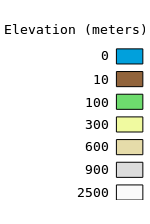

GVCC #1 - Topography of Albay, PHL using
Three.jsThis is my geovisualization of the topography of the province of Albay, Philippines as part of our GmE 210 Spatial Visualization class.
I used 10-m SAR DEM available from LiPAD processed with GDAL and ImageMagick and rendered using Three.js to depict elevation using a combined color-relief and hillshade texture.
Let me know what you think!
